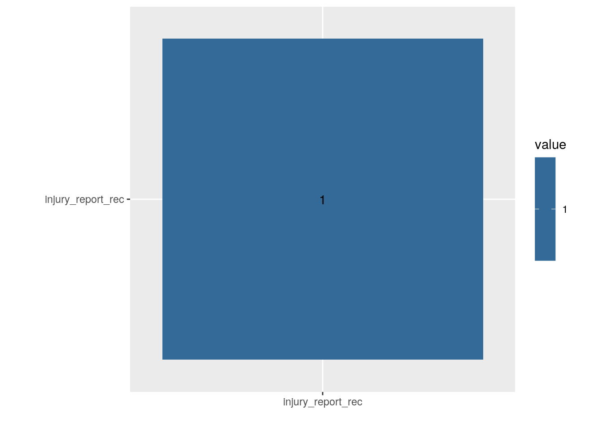
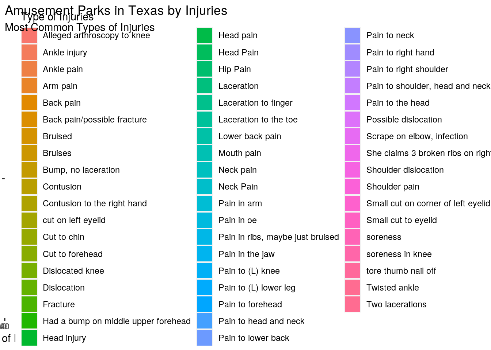
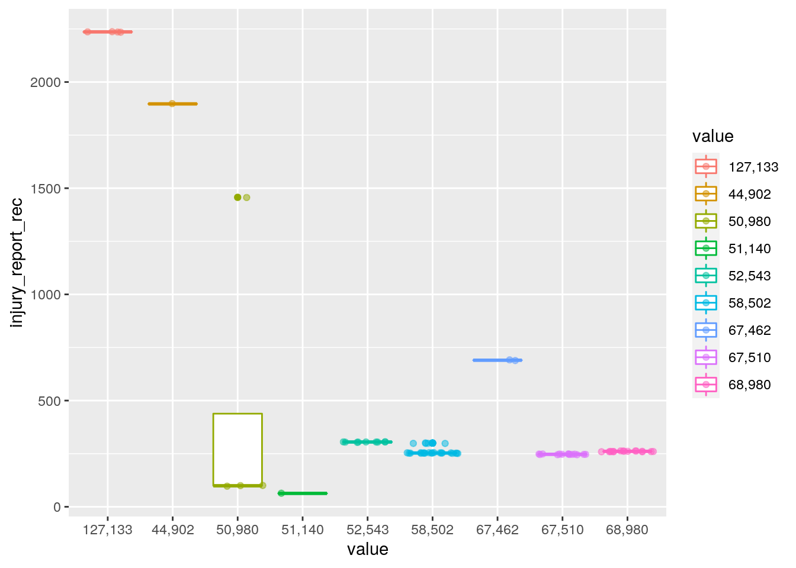
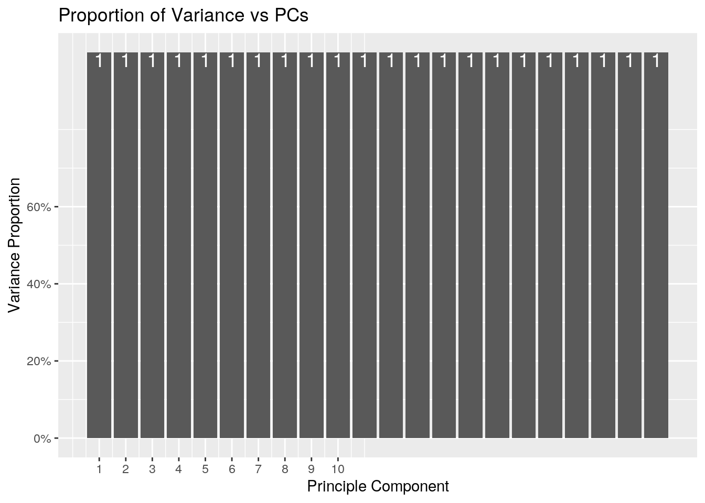

I chose to focus on amusement parks, specifically the injuries sustained by amusement park goers, for my project simply because I have always loved going to amusement parks. However, I never gave much thought to just how dangerous the rides were and how many people actually sustained severe injuries from them. The dataset I chose was provided by RPubs, and it provides a variety of details about the injuries sustained by amusement park goers at different amusement parks in Texas. I then started thinking about other variables that would be related to amusement park injuries, and the one I found most fitting was the median household income for each Texas city; I found this dataset on indexmundi.com. I then downloaded it as a csv file and uploaded it to R. I think I will find a negative correlation between the median household income of the city and the total number of amusement park injuries that occur at amusement parks in that city. I believe that the lower the median household income of the city, the less funds the city has to allocate towards entertainment and infrastructure. Therefore, the lower the quality and sturdiness of the amusement park rides and the higher the number of injuries sustained on them.
library(tidyverse)
tx_injuries <- readr::read_csv("https://raw.githubusercontent.com/rfordatascience/tidytuesday/master/data/2019/2019-09-10/tx_injuries.csv")
library(readr)
txmedianhouseholdincome <- read.csv("tx median household income.csv")Both datasets were tidy, so pivot_wider and pivot_longer were not used in this part of the document.
left_join(tx_injuries, txmedianhouseholdincome)## # A tibble: 542 x 14
## injury_report_r… name_of_operati… city st injury_date ride_name serial_no
## <dbl> <chr> <chr> <chr> <chr> <chr> <chr>
## 1 2032 Skygroup Invest… Aust… TX 2/12/2013 I Fly SV024
## 2 1897 Willie G's Post… Galv… TX 3/2/2013 Gulf Gli… GS-11-10…
## 3 837 Great Wolf Lodge Grap… TX 3/3/2013 Howlin T… 0643-C1-…
## 4 99 Six Flags Fiest… San … TX 3/3/2013 Scooby D… n/a
## 5 55 Ray Cammack Sho… Lave… AZ 3/11/2013 Alien Ab… 862162
## 6 780 ZDT's Amusement… Segu… TX 3/12/2013 Go Karts n/a
## 7 253 Six Flags Over … Arli… TX 3/15/2013 Gold Riv… 01-0511
## 8 253 Six Flags Over … Arli… TX 3/15/2013 Titan COCO62
## 9 55 Ray Cammack Sho… Lave… AZ 3/16/2013 Wild Riv… 97-05-00…
## 10 55 Ray Cammack Sho… Lave… AZ 3/16/2013 Sky Ride… A-878-B
## # … with 532 more rows, and 7 more variables: gender <chr>, age <chr>,
## # body_part <chr>, alleged_injury <chr>, cause_of_injury <chr>, other <chr>,
## # value <fct>I performed a left join because I wanted the median household income of each city to be listed along with the variables regarding the amusement park injuries that occurred in that city. There were no cases that were dropped.
joined <- left_join(tx_injuries, txmedianhouseholdincome)
joined2 <- na.omit(joined)
joined2 %>% filter(city == "Austin")## # A tibble: 2 x 14
## injury_report_r… name_of_operati… city st injury_date ride_name serial_no
## <dbl> <chr> <chr> <chr> <chr> <chr> <chr>
## 1 690 Texas Bells and… Aust… TX 43005 Cedar Ro… ADM16GH-…
## 2 690 Texas Bells and… Aust… TX 43005 Cedar Ro… N/A
## # … with 7 more variables: gender <chr>, age <chr>, body_part <chr>,
## # alleged_injury <chr>, cause_of_injury <chr>, other <chr>, value <fct>joined2 %>% arrange(value)## # A tibble: 76 x 14
## injury_report_r… name_of_operati… city st injury_date ride_name serial_no
## <dbl> <chr> <chr> <chr> <chr> <chr> <chr>
## 1 2236 Skygroup Invest… Fris… TX n/a iFly Dal… 14R4
## 2 2236 Skygroup Invest… Fris… TX 42152 iFly Dal… SV02714R4
## 3 2236 Skygroup Invest… Fris… TX 42161 iFly Dal… SKYVENTU…
## 4 2236 Skygroup Invest… Fris… TX 42175 iFly Dal… SKYVENTU…
## 5 1897 Willie G's Post… Galv… TX 3/2/2013 Gulf Gli… GS-11-10…
## 6 99 Six Flags Fiest… San … TX 3/3/2013 Scooby D… n/a
## 7 99 Six Flags Fiest… San … TX 4/28/2013 Texas Tu… n/a
## 8 99 Six Flags Fiest… San … TX 4/28/2013 Texas Tu… n/a
## 9 1457 JW Marriott San… San … TX 7/7/2013 Cibolo F… 0851-C1-…
## 10 63 Zuma Fun Center… Hous… TX 12/8/2013 Go-Karts 6638
## # … with 66 more rows, and 7 more variables: gender <chr>, age <chr>,
## # body_part <chr>, alleged_injury <chr>, cause_of_injury <chr>, other <chr>,
## # value <fct>joined2 %>% select(contains("a"))## # A tibble: 76 x 9
## name_of_operati… injury_date ride_name serial_no age body_part
## <chr> <chr> <chr> <chr> <chr> <chr>
## 1 Willie G's Post… 3/2/2013 Gulf Gli… GS-11-10… 43 Knee
## 2 Six Flags Fiest… 3/3/2013 Scooby D… n/a 51 Lower Leg
## 3 Six Flags Fiest… 4/28/2013 Texas Tu… n/a 40 Lower ba…
## 4 Six Flags Fiest… 4/28/2013 Texas Tu… n/a 40 Lower ba…
## 5 Six Flags Over … 5/27/2013 Batman IC-T99 0 Neck
## 6 Splashtown - Sp… 6/24/2013 Treehouse n/a 4 Head
## 7 JW Marriott San… 7/7/2013 Cibolo F… 0851-C1-… 32 Right El…
## 8 Wonderland Amus… 8/11/2013 Shoot th… 21001 n/a Chest
## 9 Wonderland Amus… 8/31/2013 Shoot th… 21001 n/a Ribs
## 10 Zuma Fun Center… 12/8/2013 Go-Karts 6638 19 Ankle in…
## # … with 66 more rows, and 3 more variables: alleged_injury <chr>,
## # cause_of_injury <chr>, value <fct>joined2 %>% mutate(ifelse(value > 60000, "high"))## # A tibble: 76 x 15
## injury_report_r… name_of_operati… city st injury_date ride_name serial_no
## <dbl> <chr> <chr> <chr> <chr> <chr> <chr>
## 1 1897 Willie G's Post… Galv… TX 3/2/2013 Gulf Gli… GS-11-10…
## 2 99 Six Flags Fiest… San … TX 3/3/2013 Scooby D… n/a
## 3 99 Six Flags Fiest… San … TX 4/28/2013 Texas Tu… n/a
## 4 99 Six Flags Fiest… San … TX 4/28/2013 Texas Tu… n/a
## 5 253 Six Flags Over … Arli… TX 5/27/2013 Batman IC-T99
## 6 261 Splashtown - Sp… Spri… TX 6/24/2013 Treehouse n/a
## 7 1457 JW Marriott San… San … TX 7/7/2013 Cibolo F… 0851-C1-…
## 8 305 Wonderland Amus… Amar… TX 8/11/2013 Shoot th… 21001
## 9 305 Wonderland Amus… Amar… TX 8/31/2013 Shoot th… 21001
## 10 63 Zuma Fun Center… Hous… TX 12/8/2013 Go-Karts 6638
## # … with 66 more rows, and 8 more variables: gender <chr>, age <chr>,
## # body_part <chr>, alleged_injury <chr>, cause_of_injury <chr>, other <chr>,
## # value <fct>, `ifelse(value > 60000, "high")` <lgl>joined2 %>% summarize(mean(age, na.rm = T), n(), n_distinct(city))## # A tibble: 1 x 3
## `mean(age, na.rm = T)` `n()` `n_distinct(city)`
## <dbl> <int> <int>
## 1 NA 76 9joined2 %>% group_by(ride_name, city) %>% summarize(mean_j = mean(age,
na.rm = T), sd_j = sd(age, na.rm = T), n = n(), se_j = sd_j/sqrt(n))## # A tibble: 47 x 6
## # Groups: ride_name [47]
## ride_name city mean_j sd_j n se_j
## <chr> <chr> <dbl> <dbl> <int> <dbl>
## 1 Aquaman Arlington NA 20.1 3 11.6
## 2 Batman Arlington NA 20.0 3 11.6
## 3 Black Knight New Braunfels NA 7.07 2 5
## 4 Boogie Bath New Braunfels NA NA 1 NA
## 5 Cedar Rock Railroad Austin NA NA 2 NA
## 6 Cibolo Falls 1 San Antonio NA NA 1 NA
## 7 Crazy Legs Arlington NA NA 1 NA
## 8 Cyclone Amarillo NA NA 1 NA
## 9 Der Stuka Arlington NA NA 1 NA
## 10 Double Loop New Braunfels NA NA 1 NA
## # … with 37 more rowsjoined2 %>% group_by(name_of_operation) %>% summarize(mean_j = mean(age,
na.rm = T), sd_j = sd(age, na.rm = T), n = n(), se_j = sd_j/sqrt(n))## # A tibble: 12 x 5
## name_of_operation mean_j sd_j n se_j
## * <chr> <dbl> <dbl> <int> <dbl>
## 1 JW Marriott San Antonio NA NA 1 NA
## 2 Schlitterbahn - New Braunfels NA 18.3 5 8.21
## 3 Schlitterbahn-New Branufels NA 12.3 9 4.09
## 4 Six Flags - Hurricane Harbor NA 21.0 5 9.4
## 5 Six Flags Fiesta Texas NA 6.35 3 3.67
## 6 Six Flags Over Texas NA 14.5 20 3.24
## 7 Skygroup Investments LLC DBA iFly Dallas NA 9.49 4 4.74
## 8 Splashtown - Spring, TX NA 18.4 16 4.61
## 9 Texas Bells and Whistles NA NA 2 NA
## 10 Willie G's Post Oak Inc. - Pleasure Pier NA NA 1 NA
## 11 Wonderland Amusement Park NA 14.4 9 4.79
## 12 Zuma Fun Center S Houston NA NA 1 NAjoined2 %>% group_by(injury_report_rec) %>% summarize(mean_j = mean(age,
na.rm = T), sd_j = sd(age, na.rm = T), n = n(), se_j = sd_j/sqrt(n))## # A tibble: 11 x 5
## injury_report_rec mean_j sd_j n se_j
## * <dbl> <dbl> <dbl> <int> <dbl>
## 1 63 NA NA 1 NA
## 2 99 NA 6.35 3 3.67
## 3 247 NA 14.0 14 3.75
## 4 253 NA 14.5 20 3.24
## 5 261 NA 18.4 16 4.61
## 6 300 NA 21.0 5 9.4
## 7 305 NA 14.4 9 4.79
## 8 690 NA NA 2 NA
## 9 1457 NA NA 1 NA
## 10 1897 NA NA 1 NA
## 11 2236 NA 9.49 4 4.74The data was first filtered so that the only city whose data was shown was Austin. The data was then arranged in order of increasing value of median household income. The data was then selected to only show variables that started with the letter “a” (age and alleged_injury). The data was then mutated to categorize median household incomes above $60,000 as “high”. Then summary statistics were computed for the variables. For the variable age, summarize() was used after grouping by ride_name and city. It was discovered that the cities with high median household incomes had fewer incidents of injuries sustained in amusement parks.
joined2 %>% select_if(is.numeric) %>% cor %>% as.data.frame %>%
rownames_to_column %>% pivot_longer(-1) %>% ggplot(aes(rowname,
name, fill = value)) + geom_tile() + geom_text(aes(label = round(value,
2))) + xlab("") + ylab("") + coord_fixed()
joined2 %>% mutate(name_of_operation = factor(name_of_operation,
levels = c("Splashtown", "Skygroup", "Schlitterbahn", "Typhoon",
"Six Flag"))) %>% ggplot(aes(name_of_operation, fill = alleged_injury)) +
geom_bar() + coord_flip() + labs(title = "Amusement Parks in Texas by Injuries",
subtitle = "Most Common Types of Injuries", fill = "Type of Injuries",
y = "Number of Injuries", x = "Amusement Parks")
ggplot(joined2, aes(x = value, y = injury_report_rec)) + geom_boxplot() +
geom_jitter(alpha = 0.5) + aes(color = value) In the first ggplot, it was shown that Six Flags has the highest number of injuries. In the second ggplot, the lowest median household income value had the highest number of injuries sustained, as predicted.
joined3 <- joined2 %>% select(-value, -injury_report_rec, -age)
joined3 <- joined2 %>% select_if(is.numeric) %>% scale
rownames(joined3) <- joined2$city
joined2_pca <- princomp(na.omit(joined3))
names(joined2_pca)## [1] "sdev" "loadings" "center" "scale" "n.obs" "scores" "call"eigval <- joined2_pca$sdev^2
varprop = round(eigval/sum(eigval), 2)
ggplot() + geom_bar(aes(y = varprop, x = 1:22), stat = "identity") +
geom_text(aes(x = 1:22, y = varprop, label = round(varprop,
2)), vjust = 1, col = "white", size = 5) + scale_y_continuous(breaks = seq(0,
0.6, 0.2), labels = scales::percent) + scale_x_continuous(breaks = 1:10) +
labs(title = "Proportion of Variance vs PCs", x = "Principle Component",
y = "Variance Proportion")
prepareddata <- joined2 %>% ungroup() %>% select(-value, -injury_report_rec,
-age)
nums <- prepareddata %>% select_if(is.numeric) %>% scale
summary(joined2_pca, loadings = T)## Importance of components:
## Comp.1
## Standard deviation 0.9933993
## Proportion of Variance 1.0000000
## Cumulative Proportion 1.0000000
##
## Loadings:
## Comp.1
## injury_report_rec 1I took the joined2 dataset and cleaned the data by grabbing all numerics except value, injury_report_rec, and age. I then normalized the data and ran princomp() on the scaled data to see how many principal components to keep. I then squared to convert SDs to eigen values. I plotted the proportion of variance explained by each PC from greatest to least eigen values, picked PCs until the scree plot flattened, and picked PCs whose eigen values are greater than 1 to determine how many PCs to keep.
## paste this chunk into the ```{r setup} chunk at the top of
## your project 1 .Rmd file
knitr::opts_chunk$set(echo = TRUE, eval = TRUE, fig.align = "center",
warning = F, message = F, tidy = TRUE, tidy.opts = list(width.cutoff = 60),
R.options = list(max.print = 100))…